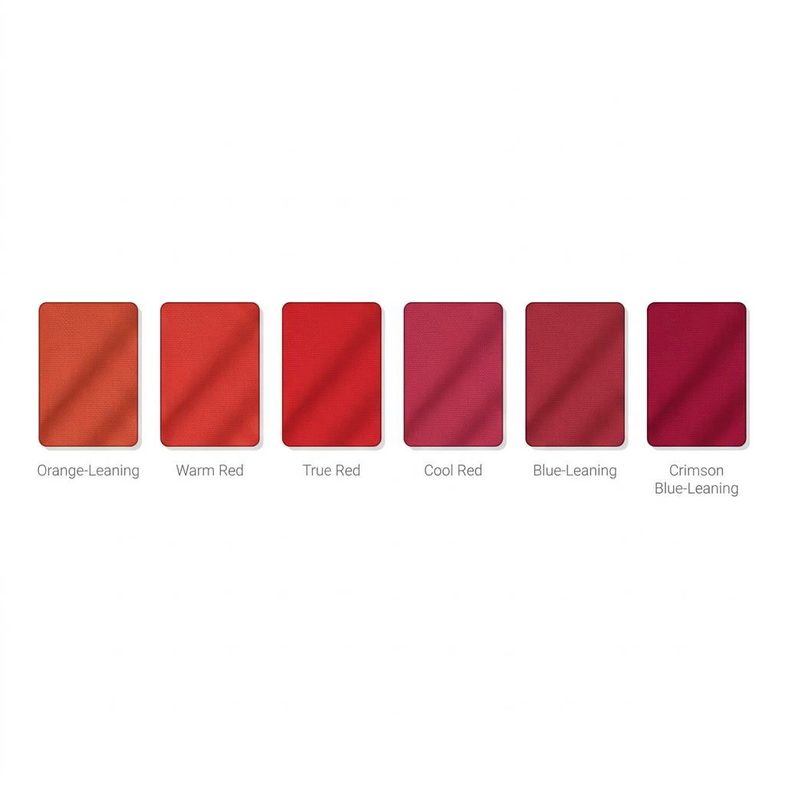

Last updated: July 14, 2026
Bridal Lehenga Colours by Skin Tone: What Actually Suits You
Quick answer: Red is rarely just "red" — warm undertones look best in rust-red or brick-red shades, cool undertones in true red or berry-red, and neutral undertones in tomato red. The same logic applies to any bridal colour: it's less about which colour you pick and more about which exact shade of it.

Beyond Red — Why the Exact Shade Matters More Than the Colour Name
Two lehengas can both be called "red" and look completely different on the same bride — one warm and glowing, one slightly muddy or harsh. This is almost always an undertone mismatch rather than a "bad colour" — which is why the shade matters far more than the colour family itself.
By Undertone
Warm undertone: rust-red, brick red, warm maroon, deep gold, terracotta
Cool undertone: true red, berry red, wine, deep magenta, sapphire blue
Neutral undertone: tomato red, classic maroon — both warm and cool shades tend to work
By Skin Depth
- Fair skin: rich, saturated colour creates contrast against lighter skin — very pale pastels can wash out under bridal lighting and flash photography
- Wheatish/medium skin: the most flexible depth — nearly any well-matched undertone shade will photograph beautifully
- Dusky and deep skin: jewel tones and deep golds create a striking, luxurious contrast; avoid brown-on-brown pairings that can flatten rather than highlight
Trending Non-Red Options
Blush pink, wine, and pastel palettes have grown popular for brides who want to step outside red — the same undertone logic still applies, so a "trending" pastel is only a good choice if the specific shade matches your undertone, not just because it's popular this season.
A Photography Note
Bridal photography uses strong flash and mixed lighting, which can wash out very pale shades and oversaturate very bright ones. If you're between two shades, the slightly deeper or more saturated option usually photographs more reliably than the lighter one.
FAQ
Is red mandatory for an Indian bride?
No — while traditional, many brides now choose wine, blush, pastel, or jewel-toned lehengas. What matters more than the colour family is matching the exact shade to your undertone.
What's the best red for fair skin?
It depends on undertone, not just fairness — a fair-cool complexion suits a true or berry red, while a fair-warm complexion suits a rust or brick red.
Can dusky or deep-skinned brides wear pastels?
Yes, but choose richer pastels (dusty rose, sage, muted lavender) over very pale, icy pastels, which can look faded against deeper skin rather than soft.
Not sure which shade of red is yours? [Get your exact undertone with Colourity →](https://colourity.com)